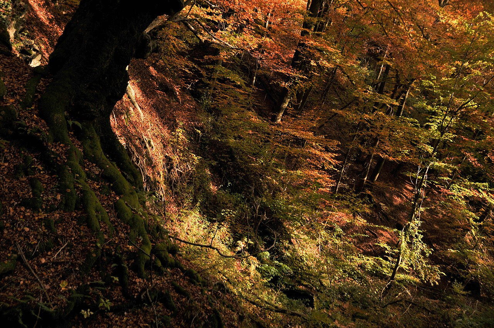
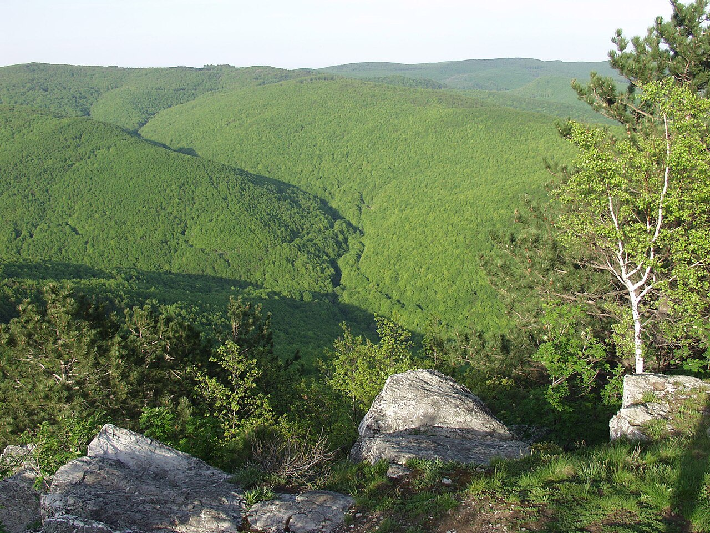

Planinarski vodič kroz Hrvatsku
Otkrij hrvatske planine
Od Medvednice do Biokova – pronađi stazu po svojoj mjeri, pripremi opremu i kreni.
- 12opisanih staza
- 6planinskih regija
- 1831 mDinara, najviši vrh
- 1,5–8 hod šetnje do cjelodnevne ture
Istaknute staze
Tri klasika za početak – od lagane šetnje Velebitom do uspona od mora do vrha Biokova.
Galerija
Klikni na fotografiju za prikaz preko cijelog zaslona. Listaj strelicama ili prevlačenjem.
Planine po regijama
Odaberi regiju i odmah vidi sve staze u njoj.
Gorski kotar
Risnjak, Klek, Bijele i Samarske stijene
Velebit
Najveća hrvatska planina, Paklenica i Premužićeva staza
Dalmacija
Biokovo, Dinara i Vidova gora s pogledom na more
Primorje i Istra
Učka i vidikovci nad Kvarnerom

Zagreb i okolica
Medvednica i Samoborsko gorje, pola sata od grada

Slavonija
Bukove šume Papuka i jezero Jankovac